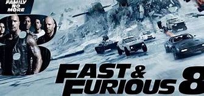

THE FATE AND THE FURIOUS
Release date: 17 Jan 2020 (United States)
Directors: Adil El Arbi · Bilall Fallah
DVD release date: 31 Mar 2020
Summary: 2hr 4min ·Crime/Thriller
Languages: English - Spanish
Costume designer: Dayna Pink
When The Fate of the Furious begins, we find Dominic Toretto and Letty Ortiz on their honeymoon. While Brian and Mia have retired from the game, and with the rest of the crew has been exonerated, the globetrotting team finds a semblance of a normal life. However, when a mysterious woman seduces Dom back into the world of crime he can’t seem to escape, his betrayal to those closest to him test all as never before. From the shores of Cuba, to the streets of New York City, and off to the icy plains off the arctic Barents Sea; the elite force crisscrosses the globe to stop an anarchist from unleashing chaos on the world’s stage, and bring home the man who made them family. ‘The Fate of the Furious’ Movie Summary The summary below contains spoilers. The Fate of the Furious (2017)In The Fate of the Furious, Dominic “Dom” Toretto (Vin Diesel) and wife Letty Ortiz (Michelle Rodriguez) are on their honeymoon in Havana, Cuba after the exciting events of Furious 7. Dom’s cousin, Fernando, gets into trouble after he ends up owing some money to a Cuban racer, Raldo (Celestino Corniello). Dom helps his cousin by beating Raldo in a “Cuban mile” race, but allows the Cuban racer to keep his car even after he loses the race. The next day, Dom is approached by Cipher (Charlize Theron) who blackmails Dom into working for her by showing him something in an unseen photo. Cipher is an elusive cyberterrorist who is wanted by various governments all over the world. Dom reluctantly agrees to help her. Shortly thereafter, Dom and his team is recruited by Diplomatic Security Service agent Luke Hobbs (Dwayne Johnson). Hobbs needs Dom’s team to help him retrieve an EMP device from a military base in Berlin. The mission is off the books, so if any of the team are captured, the United States government will not protect them. The mission goes off without a hitch, however, while the group is making their getaway, Dom runs Hobbs off the road and takes the EMP from Hobbs’ truck while the bulky agent is pinned in the car. Dom makes his getaway on a Cipher’s jet, and Hobbs is arrested and placed into a high security prison with Deckard Shaw (Jason Statham), the villain from the previous film that Dom, Hobbs, and the team had placed into prison. Mr. Nobody (Kurt Russell) orchestrates a prison escape for both Hobbs and Shaw. He recruits them to assist him and his protégé, Little Nobody (Scott Eastwood), into hunting down Cipher and stopping her evil plot. Nobody also brings in Letty, Roman Pearce (Tyrese Gibson), Tej Parker (Chris “Ludacris” Bridges), and Ramsey (Nathalie Emmanuel) to assist as well, although they are more concerned on getting Dom back and proving his innocence. Nobody reveals to the group that Cipher was the one who hired Deckard’s brother Owen (Luke Evans) to steal the Nightshade device in Furious 6 and Mose Jakande (Djimon Hounsou) to steal the God’s Eye in Furious 7. The team uses the God’s Eye to track Dom’s position to their facility, when Dom and Cipher incapacitate the group and take the God’s Eye from their computers. After Dom and Cipher escape, Dom confronts Cipher as to her motives, and she reveals that she has been holding Dom’s as yet unknown child and Dom’s ex-lover and DSS agent Elena Neves (Elsa Pataky) on board the plane. Cipher threatens Dom that if he betrays her, she will kill them both. Elena tells Dom that his son’s middle name is Marcos, but she was waiting for Dom to give their son his first name. Deckard is able to track Cipher’s untrackable plane to New York City. The group goes there and waits for either Cipher or Dom to make their move. Cipher sends Dom to retrieve the nuclear codes for Russian nuclear weapons that are being held by the Russian Minister of Defense while he is visiting New York. Prior to the theft, Dom is able to break Cipher’s constant surveillance of him, with the assistance of Raldo, and have a secret meeting with Magdalene Shaw (Helen Mirren), Deckard and Owen’s mother. Dom is able to convince Magdalene to help him, and promises to help free her sons from imprisonment. After his secret meeting, Dom is able to steal the nuclear codes and out race his team once again. During the escape, Dom shoots and appears to kill Deckard. Letty is able to catch up with Dom, and takes the briefcase with the codes. When one of Cipher’s henchmen, Connor Rhodes (Kristofer Hivju) threatens to kill Letty, Dom saves her from being shot but still takes the briefcase from her and leaves with Connor. Cipher is displeased with Dom’s divided loyalties and has Connor shoot Elena in the head, killing her. Next, Dom infiltrates a base in Russia to steal some nuclear missiles. Dom uses the EMP to disable the base’s security and to disable the security on the nuclear submarine’s computer system, allowing Cipher to remotely control the sub. Cipher tries to use the arsenal from the sub to start a nuclear war, but her efforts are once again interrupted by Dom’s team. amsey and Letty attempt to disable Cipher’s control of the sub while the rest of the team attempt to disable Cipher’s control of the nuclear weapons. They are able to stop Cipher from launching nukes, but they cannot stop her from trying to steal the sub remotely so that she can launch the nukes at a later time. The team races across a frozen bay to get to an underwater lock that would prevent the sub from leaving the bay into the open ocean. The team is pursued by Russian soldiers who do not know that the team is acting to help them, as well as the submarine itself which breaks through the ice to make the race more interesting. Meanwhile, Deckard and his brother Owen are able to board Cipher’s plane while it is in the air. Deckard faked his own death with the assistance of Dom, and is now working with his brother at the behest of his mother, to save Dom’s son and to kill Cipher. Deckard is able to get Dom’s son and notifies Dom that his son is safe. Dom then kills Connor who is about to kill his team members with a sniper rifle. Dom then charges down the hill onto the lake to take out the submarine, which he does. Deckard reaches the front of Cipher’s plane and confronts the cyberterrorist, who jumps out of the plane with a parachute. The team returns to New York and celebrates Dom and his son’s safe return and Cipher’s defeat. Hobbs is offered his old job back at the DSS, but declines in order to spend more time with his daughter. Shaw delivers Dom’s son to him, and the two former enemies put aside their differences and become friends. Over a rooftop dinner, Dom introduces the group to his son, who he has now given the first name of Brian after his friend and brother-in-law Brian O’Connor (Paul Walker).